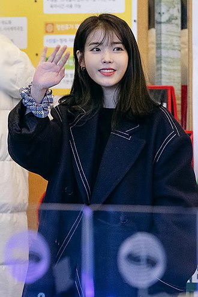

|  | |
| Actor Name | IU |
|---|---|
| Korean Name | Lee Ji-eun |
| Born | 16 May 1993(age 28) Songjeong-dong, SeoulSouth Korea |
| Nationality | Korean |
| Occupation | Singer,songwriter,actress |
| Years active | 2008-present |
| Height | 160 cm |
| Marital | Single |
| Year | Title | Director | Co-Stars | Role |
|---|---|---|---|---|
| 2011 | Dream Hight | Lee Eung-bok,Kim Seong Yoon | Bae Suzy,Kim Soo-hyun,Ok Taec-yeon,Ham Eun-jung,Jang Woo-young,IU | Kim Pil-sook |
| 2016 | Moon Lovers | Kim Kyu-tae | Lee Joon-gi,Lee Ji-eun,Kang Ha-neul | Go Ha-jin |
| 2019 | Hotel del Luna | Oh Choong-hwan | Lee Ji-eun,Yeo Jin-goo | Jang Man-wol |